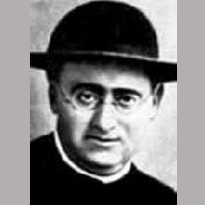

Isusovački blaženici
Svećenik
Bl. Narcis Basté Basté
1866. – 1936.
Svećenik poznat po dugogodišnjoj brizi za radnike u Valenciji nastavio je apostolat nakon ukinuća Družbe u Španjolskoj te stradao početkom Španjolskoga građanskog rata.
Tekst je preveden i prilagođen uz pomoć umjetne inteligencije.

Izvor slike
- Spomendan
- 15. siječnja
- Zaštitništvo
- Nije navedeno u izvoru
- Životni vijek
- 1866. – 1936.
- Djelovanje
- Mladi i odgoj · Siromašni i isključeni · Radnici i društvena pravda · Progoni i progonstvo · Mučeništvo
- Razdoblje
- 19., 20. stoljeće
- Služba
- Pastoral radnika u Valenciji
- Datum rođenja
- 16.12.1866.
- Mjesto rođenja
- Sant Andreu de Palomar, Barcelona, Španjolska
- Datum smrti
- 15.10.1936.
- Mjesto smrti/mučeništva
- Paterna, Valencia, Španjolska
- Okolnosti smrti/mučeništva
- Ubijen tijekom protukatoličkih progona u Španjolskom građanskom ratu.
- Uloga
- Svećenik
- Mučenik
- Da
- Ostale oznake
- Duhovnik radničke mladeži; djelovao u Valenciji
- Pripadnost
- Isusovac
- Drugi oblici imena
- Narciso Basté Basté · Narciso
Životopis
Narciso Basté Basté rođen je 1866. u Sant Andreu de Palomaru kod Barcelone. Kao isusovački svećenik u Valenciji se posvetio radnicima i katoličkim udruženjima. Njegov je apostolat imao i jasno obrazovno lice: od 1901. do 1932. vodio je Patronat radničke mladeži.
Prema istraživanju Carlosa Martíneza Herrera, u toj su ustanovi vjeronauk i duhovni život bili povezani sa školama, kulturnim priredbama, sportom i rekreacijom. Postojale su glazbene, kazališne i izletničke aktivnosti. Marijina kongregacija povezivala je različite odjele. Basté je uz rad s mladima ispovijedao, posjećivao bolesnike i pomagao siromašnima.
Nakon ukidanja Družbe u Španjolskoj 1932. ostao je u zemlji. Kada je izbio građanski rat, dugogodišnja zauzetost za radnike isprva mu je donosila određeno poštovanje. Pri prvom uhićenju 17. kolovoza 1936. oslobodio ga je časnik kojemu je nekoć pomagao savjetom. Nakon drugoga uhićenja ponovno je pušten, ali uz upozorenje da ne izlazi.
Treće je uhićenje završilo smrću 15. listopada 1936. Njegovo mučeništvo ne briše tridesetogodišnji odgojni rad: uz njega se čuva uspomena na pokušaj povezivanja katoličke vjere, kulture i mogućnosti radničke mladeži. Blaženim je proglašen 11. ožujka 2001.
Tekst je preveden i prilagođen uz pomoć umjetne inteligencije.
Pročitaj više na izvornoj stranici ↗